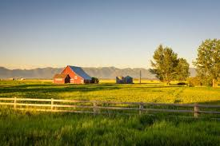

Vida na Fazenda
A vida na fazenda é tranquila e próxima à natureza. As pessoas se dedicam à agricultura, pecuária e outras atividades rurais.

Vida na Cidade
A vida na cidade é agitada e cheia de opções de entretenimento, cultura e trabalho. As pessoas se dedicam a diversas atividades econômicas e sociais.

Comparação
| Características | Fazenda | Cidade |
|---|---|---|
| Ambiente | Natureza | Urbano |
| Atividades | Agricultura, Pecuária | Comércio, Serviços |
| Qualidade de vida | Tranquila | Agitada |